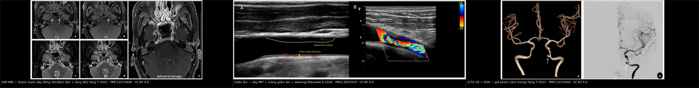
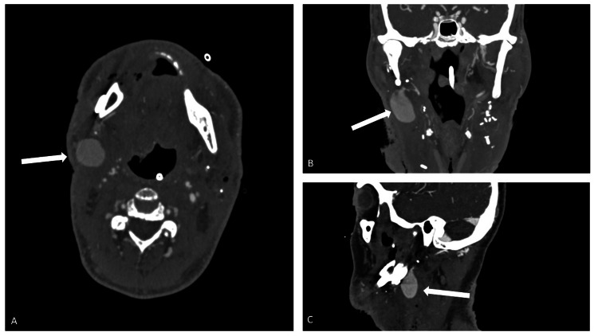
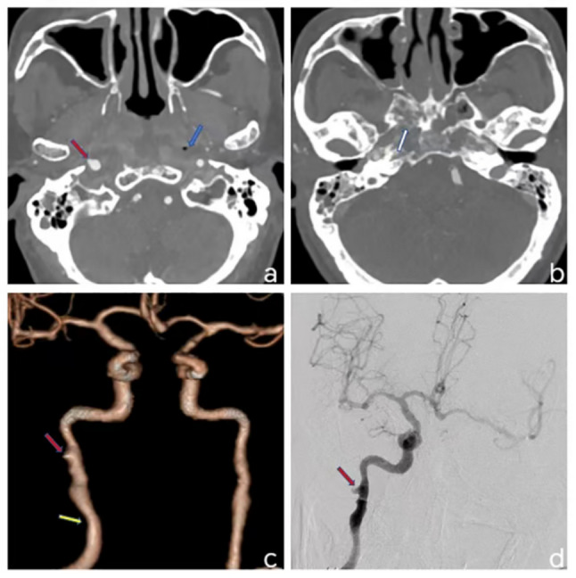
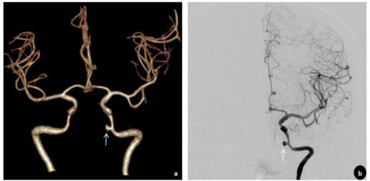
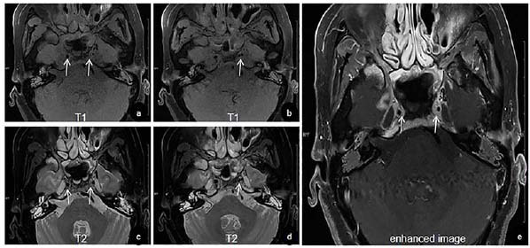

263 — Hội chứng vỡ mạch cảnh sau xạ cổ (carotid blowout syndrome, CBS): nhận diện sentinel bleed & can thiệp nội mạch
Tags: pattern:gia-phinh pattern:thoat-mach pattern:chay-mau pattern:hoai-tu vung:dong-mach-canh-trong vung:mach-co-dau-co vung:co protocol:CTA protocol:DSA protocol:BTO protocol:stent-graft incidentaloma:khong
Mức chắc chắn (certainty): tổng hợp y văn (literature synthesis) — 1 đoàn hệ 1.084 bệnh nhân ung thư đầu cổ (Diagnostics 2024, PMC11202696), 1 loạt 44 ca can thiệp nội mạch (Acta Otorhinolaryngol Ital 2025, PMC12673942), 1 loạt 225 ca với 35 ca tái phát (J Chin Med Assoc 2022, PMC12755353), 1 nghiên cứu so sánh stent bảo vệ vs bít mạch ở ung thư vòm họng (Quant Imaging Med Surg 2024, PMC10895091) và 3 ca nguyên văn có ảnh (Current Medical Imaging 2025, PMC13223408; BMC Med Imaging 2025, PMC12797736; Cureus 2025, PMC12017741). Bối cảnh hẹp cảnh do xạ (RICS) đã có bài riêng 260 — bài này chỉ giữ phần tối thiểu để hiểu cơ chế vỡ.
Câu chốt: CBS là vỡ/giả phình mạch cảnh ở vùng cổ đã xạ – đã mổ – có rò hầu–da, chia 3 loại: I đe dọa (mạch phơi, chưa chảy), II sắp vỡ (sentinel bleed — chảy máu thoáng qua tự cầm), III vỡ cấp. Sentinel bleed là tiếng chuông, không phải "chảy máu cam tái phát": phải CTA/DSA ngay trong vài giờ, không chờ nội soi cầm máu. Can thiệp nội mạch cầm máu 95%, nhưng tái chảy máu 16%, rCBS trung vị 76 ngày, và sống 6 tháng chỉ 28% vì phần lớn là bệnh ung thư tiến triển.
1. Tổng quan bệnh học – cơ chế hình ảnh
1.1 Từ xạ cổ đến vỡ mạch: 3 lớp tổn thương chồng nhau
- Lớp 1 — thành mạch: xạ gây hoại tử tế bào nội mô và cơ trơn áo giữa, tổn thương vasa vasorum, xơ hóa áo ngoài → thành mạch mỏng–xơ–thiếu máu nuôi, mất khả năng sửa chữa. Đây là nền của hẹp cảnh do xạ (RICS) (bài 260) và cũng là nền của giả phình.
- Lớp 2 — mô quanh mạch: niêm mạc hầu/mũi, cơ, sụn, da vùng cổ hoại tử sau xạ; nếu có mổ + rò hầu–da (pharyngocutaneous fistula) + nhiễm khuẩn, mô quanh mạch mất hoàn toàn → mạch phơi trong ổ hoại tử, chỉ còn lớp mô hoại tử che.
- Lớp 3 — dòng máu: áp lực động mạch đập vào chỗ thành mạch mỏng → giả phình (pseudoaneurysm) không có thành thật (chỉ là mô xơ–viêm bao quanh), rồi vỡ tự do vào đường thở/miệng. Vì máu chảy vào khoang có sẵn đường thoát (mũi, miệng, khí quản), không thấy khối máu tụ lớn như chấn thương kín — người bệnh có thể chết trong vài phút vì mất máu vào đường thở.
- TẠI SAO hình ảnh lại là "túi giả phình + khí quanh mạch": túi giả phình giữ hình cầu và ngấm cản quang đồng thì với lòng mạch (có cổ thông với mạch); khí quanh mạch phản ánh hoại tử mô + nhiễm khuẩn sinh hơi — trên CT cửa sổ mô mềm, bóng khí sát thành mạch là dấu hiệu đe dọa vỡ, không phải "khí bình thường sau mổ".
- TẠI SAO CBS hay ở cảnh trong đoạn xa: ở ung thư vòm–họng, khối u xâm lấn khoang cạnh hầu và cảnh trong đoạn lỗ rách (lacerum) theo đường hố chân bướm–lỗ rách; xạ liều cao trúng vùng này → cảnh trong đoạn xa là nơi hay vỡ nhất. Đây cũng là đoạn khó tiếp cận cả về mổ và can thiệp.
1.2 Ngưỡng định lượng trụ cột
| Đại lượng | Con số | Nguồn |
|---|---|---|
| CBS trong đoàn hệ hiện đại 1.084 bệnh nhân HNC xạ trị (2013–2023) | 0,8% toàn nhóm; NPC 0,9% vs không NPC 0,7% (p = 0,34) | PMC11202696 |
| Tích lũy CBS gộp y văn | 5% (3–7%) sau mổ + xạ · 4% (2–6%) sau mổ · 5% (3–7%) sau xạ | PMC11202696 |
| Sau mổ cổ triệt căn / sau xạ lại | 4,3% / 17% | PMC12673942 |
| Phân bố thể trong 44 ca | đe dọa 62% · sentinel 11% · vỡ cấp 27% | PMC12673942 |
| Can thiệp nội mạch (44 ca) | cầm máu 95% · thiếu máu cấp 11% · tái chảy máu 16% · sống 6 tháng 28% | PMC12673942 |
| Mổ cấp cứu kinh điển vs can thiệp nội mạch | biến chứng thần kinh 40%, tử vong 60% → còn 0–8% biến chứng sau can thiệp | PMC12673942 |
| Tái phát CBS (225 bệnh nhân → 35 rCBS) | trung vị 76 ngày (bệnh tiến triển 129 ngày; nút chưa đủ 12 ngày) | PMC12755353 |
| Vị trí rCBS | hành cảnh/thân cảnh ngoài 57% · cảnh trong 23% · nhánh xa cảnh ngoài 11% · cảnh chung 9% | PMC12755353 |
| Stent bảo vệ vs bít cảnh trong (28 NPC nguy cơ cao) | đột quỵ thủ thuật 0% vs 15,4%; tắc stent không triệu chứng 20%; sống trung vị 23,3 vs 15,8 tháng (p = 0,04) | PMC10895091 |
| Nguy cơ tích lũy hẹp cảnh do xạ (nền của CBS) | 25–26% hẹp > 50%; 12% hẹp > 70%; 4% tắc; 10 năm 29,6% không triệu chứng | bài 260 / PMC13025919 |
1.3 Ba thể CBS — định nghĩa dùng để quyết định
- Loại I — đe dọa (threatened): mạch phơi trong vết thương/ổ hoại tử hoặc bị u xâm lấn, chưa chảy máu. Điều trị: che phủ mô lành (vạt) ± can thiệp phòng ngừa; nếu chỉ theo dõi, nguy cơ vỡ cao.
- Loại II — sắp vỡ (impending/sentinel): chảy máu thoáng qua, tự cầm hoặc cầm bằng ép; có thể kèm đau tai/mũi, khối sưng vùng cổ, thiếu máu. Đây là thời điểm vàng để can thiệp — nhập viện, CTA/DSA trong vài giờ.
- Loại III — vỡ cấp (acute): chảy máu ồ ạt từ mũi/miệng/vết mổ, sốc; cần ép/bơm bóng chèn, kiểm soát đường thở, truyền máu, DSA cấp cứu.
2. Mẫu hình + chẩn đoán phân biệt theo vị trí (Gamut)
- Chảy máu mũi/miệng tái phát ở bệnh nhân xạ cổ: gamut theo nguồn:
- Cảnh trong/cảnh chung → CBS (giả phình, thoát mạch).
- Nhánh cảnh ngoài (động mạch hàm trong, mặt, hầu lên) → giả phình nhánh sau mổ/hốc miệng; nút chọn lọc.
- U tái phát xâm lấn mạch → chảy máu từ mô u, không có túi giả phình.
- Hoại tử xương thái dương/hốc mũi → chảy máu từ mô hoại tử, không nguồn mạch lớn.
- Rò động–tĩnh mạch màng cứng/cảnh–xoang hang → thì tĩnh mạch sớm, ù tai mạch đập (bài 249).
- Khối sưng/đau vùng cổ sau xạ: giả phình · áp-xe/hoại tử mô · u tái phát · hạch hoại tử · huyết khối tĩnh mạch cảnh.
- Mất máu cấp không rõ nguồn: luôn nghĩ CBS ở bệnh nhân xạ cổ + rò hầu–da + mở khí quản, kể cả khi không thấy máu bên ngoài (máu chảy vào đường thở/ống nuốt).
3. Bảng so sánh phân biệt (ma trận đối chiếu)
| Thực thể (entity) | Hình ảnh điển hình | Chốt vào (rule-in) | Chốt loại (rule-out) | Gợi ý xác nhận |
|---|---|---|---|---|
| CBS — giả phình cảnh trong | Túi giả phình ngấm cản quang cùng thì lòng mạch, cổ rộng/hẹp; khí quanh mạch, hoại tử mô quanh | Xạ cổ + chảy máu sentinel + túi giả phình ở cảnh trong/chung | Không túi, chỉ hẹp dài → RICS đơn thuần (bài 260) | CTA cấp + DSA; không chờ nội soi |
| CBS — thoát mạch hoạt tính | Cản quang tràn ra ngoài lòng mạch, lan theo thì muộn, đổi hình giữa các thì | Thoát mạch trên DSA/CTA + chảy máu đang hoạt động | Túi kín, không tràn → giả phình kín | DSA là chuẩn; chuẩn bị can thiệp ngay |
| Giả phình nhánh cảnh ngoài | Túi ở động mạch hàm trong/mặt, sau mổ/hốc miệng; thoát mạch vào mô | Vị trí nhánh cảnh ngoài + tiền sử mổ miệng/hàm | Túi ở cảnh trong → CBS (xử trí khác) | CTA/DSA; nút chọn lọc nhánh, tránh bít cảnh trong |
| U tái phát xâm lấn mạch | Khối mô mềm quanh cảnh, mất mặt phẳng mỡ, bờ không đều, ngấm thuốc; có thể hẹp lòng | Bệnh ung thư đang tiến triển + khối quanh mạch | Hẹp nhẵn, không khối → RICS/CBS | MRI tương phản + PET/CT; sinh thiết khi cần |
| Hoại tử xương thái dương/hốc mũi | Mảnh xương chết, khí trong mô, viêm quanh; không túi mạch | Đau sâu + chảy máu từ mô hoại tử + xương chết trên CT | Có túi giả phình → CBS | CT xương thái dương; nội soi; DSA loại nguồn mạch |
| Rò cảnh–xoang hang (CCF) | Giãn xoang hang, thì tĩnh mạch sớm, giãn tĩnh mạch mắt trên | Ù tai mạch đập + giãn tĩnh mạch mắt + thì tĩnh mạch sớm | Không shunt, chỉ túi ĐM → CBS | DSA (Barrow A–D) — bài 249 |

Trái: HR-VWI — dày thành cảnh trong đồng tâm bên phải, lệch tâm + lòng đôi bên trái (Current Medical Imaging 2025, PMC13223408, CC BY 4.0). Giữa: siêu âm — dày IMT + mảng giảm âm, Doppler màu aliasing (Diagnostics 2026, PMC13025919, CC BY 4.0) — nền tổn thương thành mạch của CBS. Phải: CTA 3D + DSA — túi giả phình hình "viên nang" ở cảnh trong (PMC13223408, CC BY 4.0). Ảnh ghép letterbox, không crop/kéo giãn.4. Protocol chụp + phân độ và xử trí
4.1 CTA cấp cứu — làm gì trong 10 phút
- CTA cổ–sọ lát ≤ 1 mm, phủ quai ĐMC → nền sọ, thì động mạch (bolus tracking ở quai ĐMC), dựng MPR cong + MIP + VRT; đọc cửa sổ mô mềm tìm khí quanh mạch, mất mặt phẳng mỡ, mảnh xương/u xâm lấn.
- Dấu hiệu chốt: túi giả phình (ngấm cùng thì lòng mạch, có cổ), thoát mạch hoạt tính (cản quang ngoài lòng mạch, đổi hình theo thì), hẹp/tắc kèm (RICS nền).
- TẠI SAO CTA trước DSA: CTA không xâm lấn, nhanh, định hướng vị trí và cỡ túi, phát hiện nguồn thứ hai (nhánh cảnh ngoài, u); DSA để can thiệp ngay sau đó. Ở bệnh nhân chảy máu ồ ạt, có thể DSA thẳng nếu phòng can thiệp sẵn.
4.2 DSA và quyết định can thiệp
- Chụp 4 mạch (cảnh hai bên + đốt sống) + chụp chọn lọc cảnh ngoài — vì rCBS hay ở hành cảnh/thân cảnh ngoài (57%) và nhánh xa cảnh ngoài (11%); bỏ sót nhánh = tái chảy máu sớm (trung vị 12 ngày khi nút chưa đủ).
- Hai chiến lược:
- Tái thông/giữ dòng (reconstruction): stent-graft (covered stent) bít lỗ rò, giữ cảnh trong; ưu tiên khi còn dòng và bán cầu cần.
- Bít mạch mẹ (deconstruction): bóng/coil ± plug ở cảnh trong/chung; ưu tiên khi không giữ được hoặc tổn thương quá xa; nguy cơ thiếu máu bán cầu — trong loạt 28 NPC, bít cảnh trong có đột quỵ 15,4% so với 0% ở stent bảo vệ (PMC10895091).
- Trước khi bít cảnh trong: BTO 20 phút + SPECT/CTP/ASL đánh giá bàng hệ; nhớ BTO âm vẫn 26% đột quỵ/12% tử vong (bài 3059) — không có "test an toàn tuyệt đối".
- Sau can thiệp: kháng kết tập tiểu cầu (stent), theo dõi tái chảy máu 16%, tắc stent không triệu chứng 20%, kiểm tra CTA/DSA khi có triệu chứng mới; không bỏ theo dõi ung thư vì 66% tử vong do bệnh tiến triển.
4.3 Phân độ CBS và flowchart
flowchart TD
A[Chảy máu mũi/miệng ở bệnh nhân xạ cổ] --> B{Đang chảy ồ ạt?}
B -->|Có| C[Ép/bơm bóng chèn + đường thở + truyền máu<br/>DSA cấp cứu]
B -->|Không: sentinel/thoáng qua| D[CTA cổ–sọ ≤ 1 mm + DSA<br/>KHÔNG chờ nội soi cầm máu]
D --> E{Có giả phình/thoát mạch?}
E -->|Không| F[Tìm nguồn khác: u, nhánh cảnh ngoài, hoại tử xương, CCF]
E -->|Có| G{Còn giữ được cảnh trong?}
G -->|Có| H[Stent-graft/covered stent]
G -->|Không| I[BTO + SPECT/CTP/ASL đánh giá bàng hệ]
I --> J[Bít mạch mẹ ± bypass]
H --> K[Kháng kết tập + theo dõi tái chảy máu 16%<br/>rCBS trung vị 76 ngày]
J --> K
4.4 Phòng ngừa ở nhóm nguy cơ cao
- Nhóm nguy cơ cao: xạ lại, liều tích lũy cao, rò hầu–da, mổ cổ nhiều lần, mở khí quản, nhiễm vùng cổ, mạch phơi.
- Stent bảo vệ phòng ngừa ở cảnh trong đoạn xa (NPC): an toàn hơn bít mạch (đột quỵ 0% vs 15,4%) nhưng tắc stent không triệu chứng 20% và cần theo dõi — chỉ định phải cá thể hóa (PMC10895091).
- Kiểm soát nhiễm + che phủ mô lành (vạt cơ) là nền tảng; can thiệp mạch không thay thế việc xử lý ổ hoại tử.
5. Biến thể bình thường và cạm bẫy
- "Chảy máu cam tái phát" ở bệnh nhân xạ cổ = CBS cho tới khi loại trừ. Nội soi mũi cầm máu đơn thuần có thể làm vỡ túi giả phình; nếu đã cầm máu, vẫn phải CTA/DSA trước khi cho về.
- Không thấy máu bên ngoài không loại trừ CBS: máu chảy vào miệng/hầu/khí quản; bệnh nhân có thể chỉ thiếu máu, ho máu, khó thở.
- Khí trong mô mềm cổ sau xạ/mổ có thể do hoại tử hoặc nhiễm khuẩn sinh hơi; nhưng khí sát thành mạch là dấu hiệu đe dọa vỡ — đọc cửa sổ mô mềm, đừng chỉ nhìn xương.
- Giả phình nhánh cảnh ngoài (động mạch hàm trong) sau mổ/hốc miệng: chảy máu miệng ồ ạt nhưng không phải CBS; nút chọn lọc nhánh thường đủ, tránh bít cảnh trong oan.

Không phải mọi chảy máu sau mổ cổ là CBS: CTA thì động mạch cho thấy túi giả phình 2,9 cm từ động mạch hàm trong phải, túi lan xuống dưới–ra ngoài vào giường mổ vùng cổ (Cureus 2025, PMC12017741, CC BY 4.0). Xử trí: nút mạch chọn lọc, không bít cảnh trong.- Tái chảy máu sau can thiệp có thể do bệnh tiến triển (trung vị 129 ngày) hoặc nút chưa đủ (trung vị 12 ngày) — luôn so sánh DSA lần đầu và lần tái phát; chụp lại cảnh ngoài nếu lần đầu chỉ xử lý cảnh trong.
- Stent có thể gãy/ngắn lại/xuyên thành trong vùng cổ đã xạ; theo dõi bằng CTA, không dựa vào X-quang cổ.
- BTO âm không đồng nghĩa an toàn: vẫn 26% đột quỵ/12% tử vong sau bít mạch mẹ (bài 3059); cần SPECT/CTP/ASL + lâm sàng.
- Satisfaction of search: thấy túi giả phình cảnh trong rồi dừng — phải tìm nhánh cảnh ngoài, u tái phát, rò hầu–da, CCF vì có thể nhiều nguồn chảy máu.

Bệnh nhân ung thư vòm–họng sau xạ: giả phình cảnh trong đoạn C1 (mũi tên đỏ) kèm khí trong ổ hoại tử vòm mũi họng (mũi tên xanh) và phá hủy xương bướm — khí + hoại tử mô quanh mạch là dấu hiệu đe dọa vỡ, phải can thiệp trước khi chảy máu ồ ạt (BMC Med Imaging 2025, PMC12797736, CC BY-NC-ND 4.0, nguyên bản).6. Tự lượng giá — Blind Quiz ngay trên trang tĩnh
Ca 1 — Nam 58 tuổi, ung thư vòm–họng xạ trị 6 năm trước, chảy máu mũi 2 tuần nay "lúc có lúc không", hôm nay chảy ồ ạt rồi tự cầm. CTA được chụp.

- Gợi ý lâm sàng: xạ cổ cũ, chảy máu tái phát, không sốt, không chấn thương.
- Câu hỏi: Dấu hiệu chính ở đâu? Đây là loại CBS nào? Ba chẩn đoán phân biệt? Bước tiếp theo không được làm?
Bấm để hiện đáp án (findings + chẩn đoán)
- Dấu hiệu: túi giả phình hình "viên nang" (mũi tên) ở động mạch cảnh trong đoạn xa, rõ trên CTA 3D (a) và DSA (b); mạch não trên còn dòng.
- Chẩn đoán: CBS loại II (impending/sentinel) — giả phình cảnh trong sau xạ, đã có sentinel bleed. Vì xạ làm hoại tử áo giữa + mô quanh mạch, tạo túi giả phình không có thành thật.
- Phân biệt: u tái phát xâm lấn mạch, giả phình nhánh cảnh ngoài, rò động–tĩnh mạch/CCF.
- Không được: chỉ soi mũi cầm máu rồi cho về; không chờ chảy máu lần sau. Cần DSA + can thiệp (stent-graft hoặc bít mạch mẹ) ngay.
- Nguồn ảnh: Yang Y et al., Current Medical Imaging 2025, Fig. 2 — PMC13223408, CC BY 4.0.
Ca 2 — Nam 62 tuổi, mổ ung thư lưỡi 3 tuần trước, chảy máu miệng ồ ạt, huyết áp tụt. CTA cổ.
- Câu hỏi: Túi ở mạch nào? Có phải CBS không? Xử trí khác CBS ở điểm nào?
Bấm để hiện đáp án (findings + chẩn đoán)
- Túi giả phình 2,9 cm phát sinh từ động mạch hàm trong (maxillary artery) phải, lan xuống dưới–ra ngoài vào giường mổ vùng cổ; các thì cho thấy thoát mạch hoạt tính vào mô mềm/miệng.
- Không phải CBS (không phải cảnh trong/chung) — đây là giả phình nhánh cảnh ngoài sau mổ.
- Xử trí: nút mạch chọn lọc nhánh cảnh ngoài (coil/keo) để cầm máu, không bít cảnh trong; CBS mới cần stent-graft/bít mạch mẹ ± BTO.
- Nguồn ảnh: Salloum E, Altan A, Cureus 2025, Fig. 1 — PMC12017741, CC BY 4.0.
Ca 3 — Bệnh nhân xạ cổ 5 năm, đột quỵ nhẹ, HR-VWI cảnh được chụp. Nhìn ảnh trước, mô tả trước.

- Câu hỏi: Thành mạch hai bên khác nhau thế nào? Dấu hiệu "lòng đôi" gợi ý gì? Vì sao phải loại trừ trước khi can thiệp?
Bấm để hiện đáp án (findings + chẩn đoán)
- Phải: dày thành ĐỒNG TÂM (mũi tên trắng); trái: dày LỆCH TÂM + "lòng đôi" (b, d) — gợi ý bóc tách/vạt nội mạc trên nền xạ.
- Chẩn đoán: bệnh mạch cảnh do xạ với tổn thương thành mạch hai bên (nền của RICS — bài 260); cần CTA/DSA phân biệt hẹp do xạ với bóc tách.
- Vì sao quan trọng: nong bóng/stent ở mạch đang bóc tách có thể làm lan vạt nội mạc và tắc cấp; phải xác định trước khi can thiệp.
- Nguồn ảnh: Yang Y et al., Current Medical Imaging 2025, Fig. 1 — PMC13223408, CC BY 4.0.
Bài liên quan chéo
- 200 – Tổng quan Hệ Thần kinh
- 260 – Bệnh mạch cảnh do xạ đầu cổ (RICS): hẹp–tắc dài, nhẵn, không vôi
- 262 – Bệnh mạch máu LỚN do xạ trị não (hẹp–tắc kiểu moyamoya)
- 3046 – Chảy máu cam ồ ạt do vỡ giả phình cảnh trong vào xoang bướm
- 249 – Rò động mạch cảnh–xoang hang sau chấn thương
- 3059 – Thiếu máu não sau bít động mạch cảnh trong (BTO, bypass)
Ảnh
263_hep-canh-do-xa_SieuAm_PMC13025919-F2.jpg— siêu âm: dày IMT + mảng giảm âm + aliasing (nền RICS).263_hep-canh-do-xa_MRI-PMC13223408-F1.jpg— HR-VWI: dày thành đồng tâm/lệch tâm + lòng đôi.263_gia-phinh-canh_CTA-DSA_PMC13223408-F2.jpg— CTA 3D + DSA: túi giả phình cảnh trong.263_gia-phinh-dong-mach_CTA_PMC12017741-F1.jpg— CTA: giả phình động mạch hàm trong (không phải CBS).263_gia-phinh-canh_CTA_PMC12797736-F2.jpg— CTA: giả phình cảnh trong C1 + khí trong hoại tử vòm mũi họng.composite_rics_cbs.jpg— ảnh ghép 3 ô (chỉ từ nguồn CC BY 4.0), tạo bằngtools/make_composite.py.- Nguồn + giấy phép từng ảnh: xem
images/CREDITS.mdvàsources.md.
Không dùng để chẩn đoán độc lập khi chưa có người hướng dẫn.